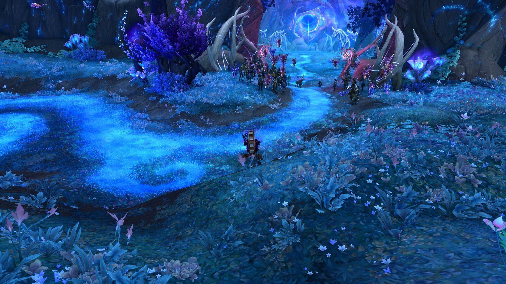

Hear the missing song.
Understand a silence that has fallen over a treasured family object.
The Listener Between Winds
Some people listen for a voice in the storm. Aelyndra listens for the moment the wind falls silent—and wonders what a people raised above the world will become when the air no longer answers them.
“A tree does not betray its roots when it bends toward another sky.”
Aelyndra Zephyrveil is a Skyborne Druid with a patient temperament and a talent for noticing what the great debates leave out: a seed carried in a pocket, a nest displaced by a storm, an elderly neighbour waiting for a promised visit. Her people inherited a culture shaped by exile, sky-bound architecture and ancient relationships with elemental wind spirits. She does not pretend to be old enough to remember those beginnings herself.
As Zephras Isle faces a crisis and its people argue about their future, Aelyndra finds herself torn between two kinds of loyalty. One honours the home that formed her; the other insists that any home worthy of preservation must allow life to change. Her druidism is not mastery over the air, nor a license to speak for nature. It is a practice of listening, watching and learning restraint.
Her conflict is the cost of attachment: can she protect what she loves without turning protection into a cage?

Understand a silence that has fallen over a treasured family object.
She fears the disappearance of both a place and the fragile bonds between its people.
Accept that love does not grant ownership of another being, community or tradition.
Blizzard establishes the Skyborne, Zephras Isle and the crisis of missing air spirits. The individual people and experiences below are original roleplay fiction, not quests already completed.
Aelyndra was raised on Zephras Isle among suspended terraces, stone passages and cultivated places where soil had to be protected carefully from the restless air. In the family garden she learned to tie seedlings against a sudden gust, to water roots without stripping them bare, and to wait while a damaged branch repaired itself. The sky fascinated her, but she was drawn just as strongly to the smallest lives clinging to the terraces.
Adults liked to tell stories about ancestors and the wind spirits that once sheltered their people. Aelyndra listened, but the part that stayed with her was never the great triumph. It was the idea that a pact required listening from both sides.
Her mother Ilyra, an invented figure in this roleplay, cared for the family garden and repaired delicate wind chimes used to mark changes in the weather. Whenever Aelyndra asked whether something was right or wrong, Ilyra answered with another question: “Who might we fail to hear if we decide too quickly?” She taught her that tending a living thing sometimes means moving it into the light—and sometimes leaving it in the shade.
From her father, a reserved historian of household records named Eren Zephyrveil, she inherited an appetite for the stories of those who had no place in formal chronicles. Neither parent promised her a great destiny. They asked her to become someone a frightened neighbour could trust.
On a terrace near the family dwelling hung a small silver wind chime of five leaves. Family tradition claimed it had been passed down for generations, though no one could say how many. One morning it remained silent despite a steady breeze that stirred everything else. Aelyndra checked its joints, its position and its metal. Nothing appeared broken. At night she dreamed she heard a note where no wind could reach.
She did not declare a curse or a prophecy. Perhaps the instrument was faulty. Perhaps memory made an ordinary silence feel larger because anxiety had already reached the island. She wrapped the chime in cloth and kept it only as a reminder to observe without assuming.
As the disappearance of the air spirits and the instability of ancient structures put Zephras Isle under strain, neighbours argued about which path the Skyborne should take. Some favoured elemental traditions; others were drawn to the legacy of ancient arcane practice. Aelyndra listened to both. She suspected that the sharpest speeches concealed a quieter fear: that whichever future prevailed, someone's childhood home would vanish from its own story.
Her training as a Druid deepened her respect for cycles, resilience and limits. She refused to treat opposing factions as enemies before she had met the people who believed in them. The final political allegiance she will take in Forever is deliberately unwritten.
She began preparing a travelling satchel: herb papers, a small mortar, seeds with labels, a pressed leaf from the garden and the silent chime. She knows little of the lands below from personal experience. Their forests, rivers and people are stories awaiting her, not conquered territory on a personal map. When the time comes, she will walk into them as a learner.
She does not imagine that leaving will heal her people. Her hope is smaller and harder: to return with enough humility to understand what needs changing, and enough courage to say it aloud.
This is a private character history, not a faction, lineage or order officially recognized in Warcraft lore. Official Blizzard Skyborne background ↗
The Zephyrveils keep a delicate wind chime with five metal leaves. Their personal household saying holds that each leaf stands for one thing a listener owes the world: patience, honesty, change, compassion and silence. No one agrees whether those meanings were inherited or invented later.
Motto: “The wind belongs to no hand.” An original family saying.
A garden keeper whose care for damaged plants taught Aelyndra that rescue can become harm when it is rushed. Her answers are usually questions rather than instructions.
A quiet collector of household memories. He fears that the island's political arguments will leave no room for the people who refuse to choose sides quickly.
Perhaps a mechanism failed, perhaps a family story became distorted, perhaps something stranger is happening on the island. There is no proof that the chime is connected to the missing spirits.
No solution is canon, and no future Skyborne quest is assumed to contain an answer.
An instrument stopped sounding despite movement in the surrounding air. A natural mechanical fault remains plausible.
Older stories disagree about the object's origin; no dated record confirms the earliest account.
Aelyndra once dreamed the chime rang in stillness. A dream is not evidence of a message from the spirits.
Unrecorded. We will only add specific people, quests or events after Aelyndra actually experiences them in the game.
The chime could symbolize family anxiety without being magical; it could be an unfinished design, a misunderstood heirloom or a detail later echoed by a real in-game event. The true resolution may concern people and reconciliation rather than a supernatural object. These are possibilities, not predetermined facts.
She is observant and patient, but not meek. Aelyndra will speak clearly when someone calls another life expendable for the comfort of tradition.
She wants to mend every rift. Sometimes she listens so long that an urgent decision passes her by; sometimes she believes suffering can be soothed by tenderness alone.
Not simply falling from the sky, but discovering that the community she loves cannot survive without changing—and that she may be asked to choose who changes first.
She does not claim trees, beasts or winds must serve her. Her shapeshifting reflects study and reciprocity, bounded by the actual abilities available to the class.
She dries herbs carefully, notes their uses and makes potions as acts of preparation. She never claims to cure wounds or perform miracles the game mechanics do not allow.
Her eventual Alliance or Horde allegiance is the player's choice. Until you make it, she is a Skyborne of Zephras Isle rather than a prewritten partisan.
Her early journey introduces her to the crisis of Zephras Isle and the needs of its inhabitants, without assuming a particular quest outcome.
PLAY HOOK: record the first real change or loss she witnesses.Leaving familiar skies teaches her that other cultures do not understand nature, freedom or belonging in the same way.
PLAY HOOK: notice a new place or community and a lesson she could not learn at home.Allegiance and friendship may test her commitment to listening. Her choice should be shaped by actual roleplay and the chosen playable faction.
PLAY HOOK: make the faction decision a meaningful personal commitment, not an automatic inherited belief.Her own answer may come from reconciliation, a changed tradition or the understanding that some silences never acquire a voice.
PLAY HOOK: let real experiences decide what home will mean to her.Short English descriptions and chat phrases, ready to use if and when you bring her into the game. No addon or automated roleplay is required.
Aelyndra Zephyrveil is a thoughtful Skyborne Druid from Zephras Isle, raised among high terraces, family gardens and old stories of the wind. As her people face a changing future, she studies the patience of the natural world rather than claiming mastery over it. She carries dried herbs, a small mortar and a silent five-leaf chime. Her allegiance—and the meaning of that silence—remain unwritten.
A travelling Skyborne woman in practical layered robes, carrying small herb pouches and a carefully wrapped silver chime. Her hands are often stained with plant pigments. She studies the direction of the wind before speaking, and pauses to examine living things others step over.
“Aelyndra Zephyrveil. I am still learning what the world sounds like beneath the clouds. If you have a little time, I would like to hear how you came to this place.”
Starting zone: listen to the real story of Zephras Isle before inventing a solution. Shapeshifting: treat each form as a different way to learn the land. Herbalism: gather samples and note their surroundings. Alchemy: prepare useful supplies for companions. Rest: find quiet places to observe and write. Faction: leave the decision blank until made in game.
Some mornings the terraces sang before the sun reached them. The wind moved through chimes, leaves and the narrow spaces between stone. Each sound was different. I used to believe that meant each place had its own voice.
Mother said I had confused listening with naming. A thing did not become mine simply because I could describe it. She made me sit beside a young tree until I understood that the branches did not move for my benefit.
Then one morning the little silver chime outside our door made no sound. Every other leaf turned in the breeze. The cloth over my shoulder stirred. I checked the hinges, the metal, the cords. The chime remained still.
It is a small thing to carry beside the troubles of an entire island. The old structures tremble, and the stories of our missing guardians have become arguments across tables where people once shared meals. There are days when I am ashamed to worry over a toy of five silver leaves.
Yet I have begun to think that the small silences matter because they are where loss first teaches itself to us.
I have folded away my herbs and wrapped the chime in a square of cloth. Soon I shall go down into a world whose winds do not know my name. I hope I shall be wise enough not to demand that they learn it.
If the song returns, I would like to hear it without mistaking it for a command.
— Aelyndra Zephyrveil · Unplayed prologue
We will continue Xuthar first. Aelyndra's actual journeys, faction and companions will only become part of her history when you play her.
When Aelyndra becomes active, use your real session notes to write the next chapter without inventing quest completions or discoveries.
For now, continue Xuthar's story →Aelyndra's tale is ready, but her life in Forever has not started. Xuthar Morvayne remains the main adventurer. Her eventual faction and any shared journey will follow the real choices made in game.